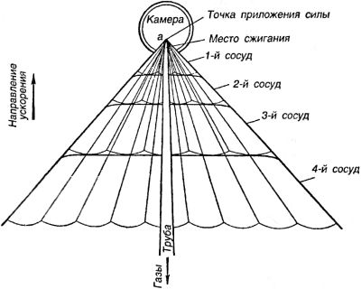
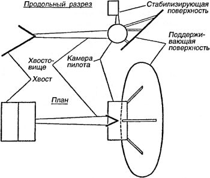
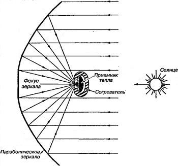

Межпланетные корабли Юрия Кондратюка
Когда изучаешь историю российской (или, если угодно, советской) космонавтики, то невольно приходишь к выводу, что нашей стране самой судьбой (или, если угодно, Богом) было предначертано стать космической державой. Допустим, Константин Циолковский так бы и остался безвестным школьным учителем, склеивающим из бумаги причудливые модели. Допустим, Фридрих Цандер предпочел бы всю жизнь заниматься винтомоторными самолетами. Но и в этом случае оставался резервный вариант! И вполне возможно, сегодня мы изучали бы в школах не биографию Циолковского, а биографию Юрия Васильевича Кондратюка, восхищаясь его талантом и даром технического предвидения. Сегодня его лишь упоминают в списке пионеров ракетостроения, а ведь этот человек, живший вдали от столиц и ничего не знающий о Циолковском, Цандере, Оберте или Годдарде, сумел создать свою собственную теорию ракет для межпланетного полета.
Жизнь и научная деятельность Юрия Кондратюка (подлинное имя — Александр Игнатьевич Шаргей) до настоящего времени изучены очень слабо. Долгое время была известна лишь одна его работа, посвященная проблемам астронавтики, — книга «Завоевание межпланетных пространств», изданная на средства автора в 1929 году в Новосибирске. И лишь в послевоенные годы стало известно, что сохранилось еще несколько рукописей Кондратюка по вопросам межпланетных сообщений, которые в 1938 году были переданы автором известному историку авиации Воробьеву.
Изучая рукописи Кондратюка, можно наблюдать, как постепенно, на протяжении ряда лет, формировались его взгляды на проблемы освоения космического пространства, как от первых наивных выводов Кондратюк пришел к взглядам, нашедшим отражение в книге «Завоевание межпланетных пространств».
Первый вариант рукописи Кондратюка по межпланетным сообщениям, датируемый 1916–1917 годами, носит характер черновых записей, в которых автор нередко ошибается, спорит сам с собой, в ряде случаев переписывает и пересчитывает отдельные разделы. Однако уже в этих ранних набросках встречается ряд интересных высказываний.
Проанализировав такие известные ему проекты приспособления для запуска пилотируемого межпланетного снаряда, как электрическая пушка «длиною в несколько сот верст» и гигантская праща, Кондратюк пришел к выводу, что наиболее подходящим средством для выхода в межпланетное пространство является «реактивный прибор».
Далее Кондратюк, как и Циолковский, поставил перед собой задачу — вывести основную формулу полета ракеты, чтобы ответить на вопрос: «Возможно ли совершать межпланетный полет на реактивном приборе при существующих ныне известных веществах?»
Проведя соответствующие расчеты, он повторно вывел (несколько иным способом, чем Циолковский) основную формулу полета ракеты (формулу Циолковского) и установил, что скорость полета ракеты в пустоте зависит лишь от скорости истечения продуктов сгорания, определяемой свойствами топлива, и от соотношения начальной и конечной массы.
Придя к выводу, что полет на другие планеты при помощи ракеты принципиально возможен, Кондратюк приступает к уточнению ряда вопросов, связанных с полетом в космическое пространство. В своей первой рукописи он рассматривает такие вопросы, как влияние сил тяготения и сопротивления среды, выбор величины ускорения и способов отлета, устройство отдельных частей межпланетного корабля, его управляемость и устойчивость.
Проект «реактивного прибора» Кондратюка выглядел так:
«Снаряд состоит из камеры, где находятся пассажиры и приборы и сосредоточено управление, сосудов, где находится активное вещество, и трубы, в которой происходит сгорание и расширение активного вещества и его газов. Сосуд для активного вещества нужно делать не один, а несколько, потому что такой один сосуд был бы значительного веса и к концу полета, когда почти все активное вещество вышло, составлял бы массу, которая, совершенно не будучи нужной, может быть, в несколько раз утяжеляла бы снаряд и требовала бы большого количества активного вещества и даже могла бы сделать невозможным все предприятие. Поэтому сосудов нужно делать несколько, разных размеров. Вещество расходуется сначала из больших сосудов, когда они кончаются, то просто выбрасываются, и начинают расходовать из следующего. Размеры сосудов нужно рассчитывать таким образом, чтобы вес кончающегося сосуда (одного сосуда без вещества) составлял для всех сосудов одну и ту же часть веса всей остальной оставшейся ракеты. Какую часть — это нужно выработать, сообразуясь, во-первых, с тем требованием, чтобы эта часть была возможно меньшей; во-вторых, с тем, чтобы число сосудов не было чересчур велико и таким образом не усложнилось бы чересчур устройство снаряда. На чертеже схематически представлена удобнейшая, по-моему, форма снаряда — камера, приблизительно крутая — сосуды в виде слоев конуса (приблизительно подобных). В виде слоев они сделаны для того, чтобы иметь меньшее протяжение по направлению ускорения, чтобы в них не получалось большого давления (высокого столба жидкости). Конус не выгодно делать ни слишком широким, ни слишком длинным — в обоих случаях должна будет увеличиваться прочность сосудов по расчету на ускорение, а в первом — и по расчету на давление (активное вещество — жидкие газы <…>).
Чтобы было возможно сделать дно сосудов более плоским, не утяжеляя их, возможно, что будет удобнее провести к ним тяжи из точки приложения силы а (давление газов на трубу), к которой посредством тяжей и прикреплены все сосуды и в которую упирается труба.
Если по каким-либо причинам жидкие кислород и водород держать вместе в смеси будет нельзя, то в каждом сосуде нужно сделать два отделения одно над другим. Соответственно нескольким сосудам и труба должна меняться при сбрасывании старых сосудов — отбрасываться последнее ее колено и передвигаться место сжигания, или вся она должна заменяться новой — это уж как из опытов будет найдено удобнее. Камера, разумеется, герметическая, хорошо согреваемая, с приборами, освежающими воздух.
Нужно испробовать, может ли человек дышать кислородо-водородной атмосферой; если да, то многое упрощается».
Таким образом Кондратюк уже в первой своей работе предложил многоступенчатую ракету, работающую на кислороде и водороде.

Рассуждая ниже о способах возвращения снаряда на Землю, Кондратюк приводит схему спускаемого аппарата, помещенного в специальный жаропрочный футляр, похожий на «вытянутое ядро», с внутренней системой охлаждения. В более поздних работах возвращаемый аппарат выглядит иначе — теперь он использует атмосферу для гашения скорости, спускаясь к Земле по сужающейся спирали. На конечном этапе возвращаемый аппарат должен, по замыслу Кондратюка, выглядеть следующим образом:
«1) камера пилота; 2) поддерживающая поверхность эллиптической формы, о конструкции которой будет ниже; большая ось эллипса должна быть перпендикулярна траектории, а малая — наклонна под углом а (около 40°), дающим наибольшую подъемную силу; 3) длинное хвостовище, отходящее от камеры пилота назад под углом а к малой полуоси эллипса поддерживающей поверхности; на конце — хвост в виде двух плоских поверхностей, составляющих двугранный угол около 60°, ребро которого параллельно большой оси эллипса поддерживающей поверхности, а равноделящая плоскость параллельна траектории; 4) поверхность для автоматического поддержания боковой устойчивости в виде угла, подобного хвосту, но с меньшим растворением (около 45°), расположенного над камерой пилота и обладающего ребром, перпендикулярным траектории и ребру хвоста. Эта поверхность автоматически поддерживает боковое равновесие снаряда, поворачиваясь вправо и влево вокруг своего ребра, будучи управляема жироскопом, находящимся в камере пилота. Ось жироскопа заранее устанавливается параллельно оси вращения Земли. <…> Все указанные наружные части должны быть взяты на ракету при отправлении в разобранном виде и затем собраны до того момента, как орбита пройдет хотя бы своей ближайшей к Земле частью через атмосферу ощутимой плотности. Планероподобный снаряд описанной конструкции (от планера он отличается более всего весьма большим углом атаки, устройством хвоста и приспособлением боковой стабилизации) будет обладать свойством всегда держаться в слоях атмосферы такой плотности, что при данной его скорости вертикальная слагающая давления воздуха на поддерживающую поверхность будет равна кажущейся тяжести снаряда».

Этот аппарат заметно отличается от ракетопланов Цандера, но сама мысль об использовании особой аэродинамической схемы взамен «ракеты в футляре» весьма примечательна
В своих работах Кондратюк говорит и о возможности использовании солнечной энергии и применении для этой цели особых зеркал. Но в отличие от Цандера он предлагал использовать не силу давления солнечных лучей, а тепловую составляющую солнечного излучения для подогрева рабочего вещества движителя.
Согласно Кондратюку, параболическое зеркало концентрирует в своем фокусе солнечные лучи, нагревая приемник тепла, в котором может осуществляться реакция выделения водорода и кислорода из воды. Полученный путем разложения гремучий газ направляется в «двигатель внутреннего сгорания».
Помимо применения концентрирующих зеркал на межпланетном корабле, Кондратюк мечтал о том, чтобы вывести такие зеркала на орбиту с целью обогрева Земли или даже терраформировать с их помощью другие планеты.
«Допустим, мы умеем выделывать дешевые и легкие складные зеркала (плоские). Сделаем зеркала большой величины и в огромном количестве (я не думаю, чтобы десятина зеркала весила более нескольких десятков пудов). Препроводим их на ракетах и приведем их в такое состояние, чтобы они стали земными спутниками. Развернем их там. Соединим в еще большие общими рамами. Станем управлять ими (поворачивать) каким-либо образом, например, поставив в узлах их рам небольшие реактивные приборы, которыми будем управлять посредством электричества из центральной камеры.
Если эти зеркала будут исчисляться десятинами, то можно взять подряд на освещение столиц. Но, если привлечь к этому огромные средства, если наделать зеркал в огромных количествах и пустить их вокруг Земли так, чтобы они всегда (почти) были доступны солнечному свету, то можно ими согревать части земной поверхности, можно обогреть полюса тундры и тайги и сделать их плодородными. Может быть даже, пользуясь огромными количествами доставляемого ими тепла и энергии, можно было бы приспособить для жизни человека какую-нибудь другую планету, удалить с нее вредные элементы, насадить нужные, согреть. Теми же зеркалами, употребленными как заслонками, можно было бы охлаждать что угодно, заслоняя от него Солнце. Наконец, сконцентрировав на каком-нибудь участке Земли солнечный свет с площади в несколько раз большей, можно этот участок испепелить. Вообще же с такими огромными количествами энергии, которые могут дать зеркала, можно приводить в исполнение самые смелые фантазии. Именно же для полетов они могут иметь еще такое значение, что, направив в снаряд широкий сноп концентрированного света, мы будем сообщать ему большее количество энергии, чем он мог бы получить от Солнца. Так же мы можем и сигнализировать в Солнечной системе.
(Зеркала же можно употребить и как рефлекторы для волн станции беспроволочного телеграфа для направления их куда нужно)».

Такая вот эволюция: от «зеркального» движителя и освещения столиц — к замораживанию и испепелению «участков» земной поверхности, населенных, как нетрудно догадаться, «нашими врагами». Кондратюк был, видимо, одним из первых, кто задумался о возможности создания орбитального оружия, но, к сожалению, не последним.
Однако Юрий Кондратюк смотрел еще дальше. Определив основные этапы программы освоения космического пространства, он указал, что для осуществления перелетов к Луне, к Марсу и другим планетам необходима промежуточная база, расположенная на орбите спутника Луны. Для снабжения базы Кондратюк предлагал использовать беспилотные транспортные ракеты или снаряды, запускаемые из двухкилометровой пушки. Чтобы свести вероятность «промаха» транспортного снаряда к минимуму, изобретатель советовал развернуть в пространстве рядом с базой «сигнальную площадь» из материала, «обладающего возможно большим отношением отражательной способности видимых лучей к весу его квадратного метра». Если общая площадь этого сооружения будет не менее «нескольких сотен тысяч квадратных метров», то его, по мнению Кондратюка, можно будет наблюдать с Земли, что позволит корректировать запуск транспортных ракет и снарядов.
Сама база должна была иметь форму тетраэдра из алюминиевых ферм, в вершинах которого расположены массивные элементы базы с жилыми помещениями и складами. На базе должна постоянно дежурить смена из трех человек У них имеется мощный телескоп-рефлектор для астрономических наблюдений, а также небольшая ракета на двух пилотов со своим астрономическим оборудованием, способная вылетать на перехват транспортных снарядов и даже совершать кратковременные посадки на Луну. Двусторонняя связь между базой и Землей осуществляется посредством световых сигналов, посылаемых мощными прожекторами, установленными на Земле, и с помощью легкого металлического зеркала, установленного на базе.
Самым примечательным в этом проекте является то, что именно Кондратюк первым предложил разделить «лунный корабль» на две части — на орбитальный (база) и посадочный (двухместная ракета) модули, показав при этом, что такая схема заметно снизит расходы на лунную экспедицию. Идея «разделения» имела поистине историческое значение.
Вот что однажды написал Джон Хуболт, один из создателей космической системы «Аполлон» («Apollo»):
«Когда ранним мартовским утром 1968 года с взволнованно бьющимся сердцем я следил на мысе Кеннеди за стартом ракеты, уносившей корабль «Аполлон-9» по направлению к Луне, я думал в этот момент о русском — Юрии Кондратюке, разработавшем эту самую трассу, по которой предстояло лететь трем нашим астронавтам».
Именно Джон Хуболт был инициатором использования в американском проекте лунной экспедиции двухмодульной схемы Кондратюка, и в упорной борьбе с ведущими специалистами, в том числе с Вернером фон Брауном, ему удалось настоять на своем.
Подробности этой битвы идей стали известны позднее, когда в марте 1969 года «Лайф» опубликовал статью Дэвида Шеридана «Как идея, которую никто не хотел признавать, превратилась в лунный модуль». В частности, в статье Шеридана говорилось: «Идея, которая вызвала к жизни лунный модуль, еще более дерзка, чем сам аппарат». В 1961 году схема Кондратюка показалась американским специалистам настолько нелепой, что предложивший ее Джон Хуболт был даже осмеян.
Однако потом было признано: настойчивость Хуболта, его «одинокая и бесстрашная битва» за схему Кондратюка сберегла Соединенным Штатам миллиарды долларов и пару лет бесценного времени.
Судьба же талантливого изобретателя, который, не будь Циолковского или Цандера, вполне мог стать «отцом» современной космонавтики, сложилась трагически. В 1930 году он как сотрудник «Хлебстроя» был обвинен во вредительстве и получил три года; срок впоследствии был заменен ссылкой и работой в одном из проектных бюро ОГПу. В 1941 году Юрий Кондратюк ушел добровольцем на фронт и погиб в бою на территории Кировского района Калужской области. Недавно озвученная версия, якобы он попал в немецкий плен и работал в Пенемюнде, не подтвердилась.